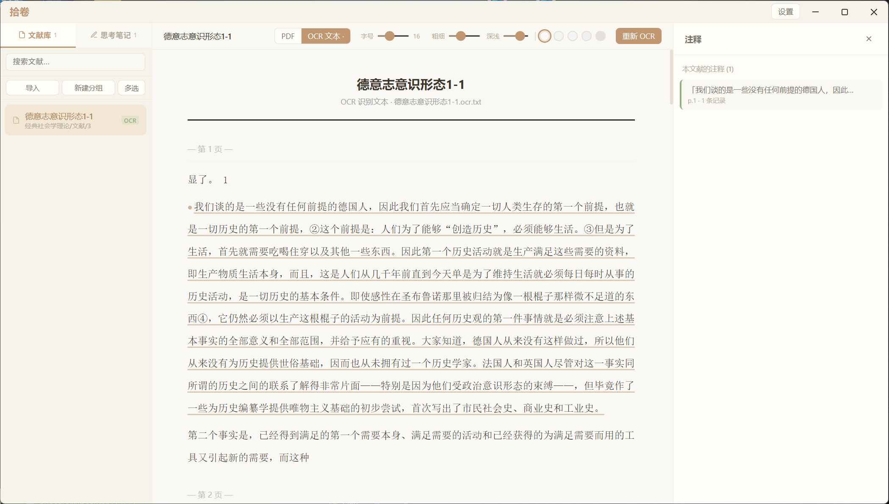
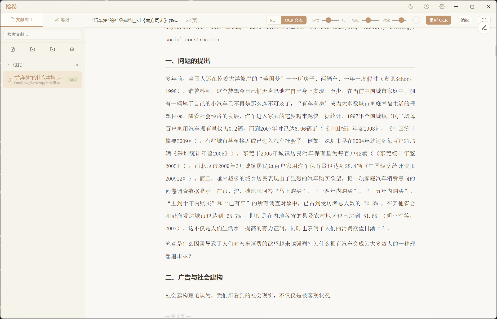
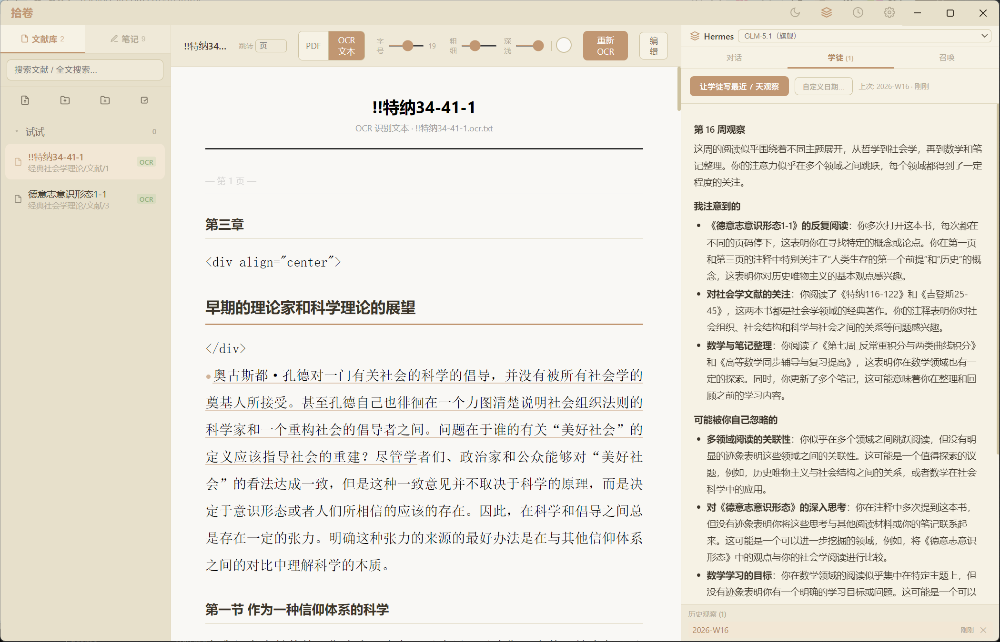
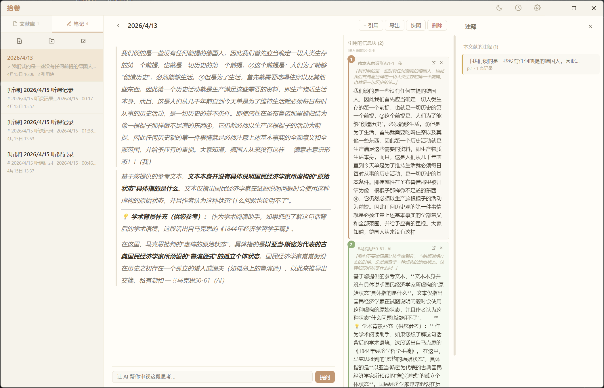
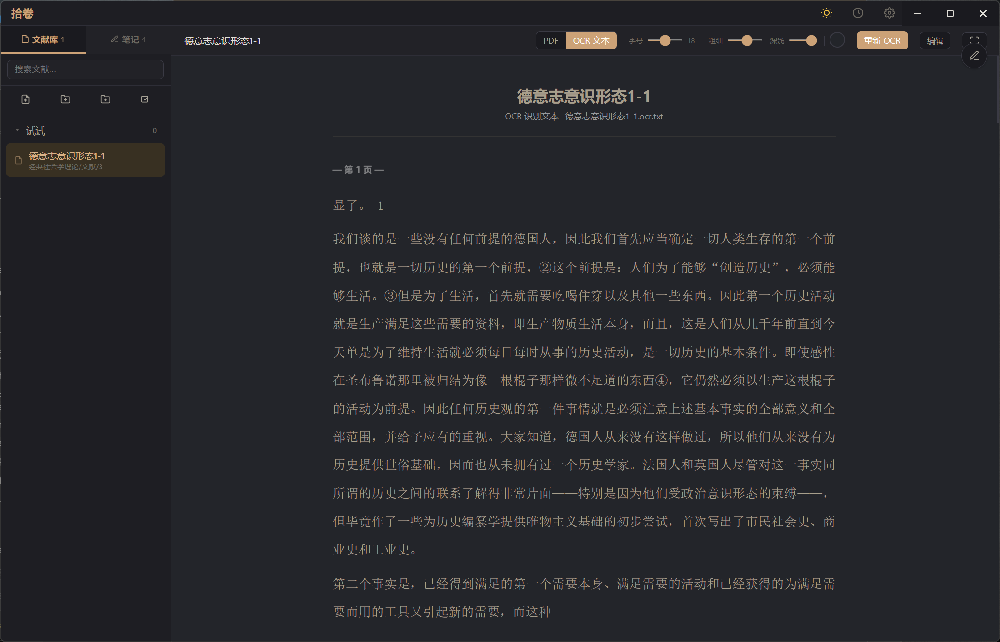

本地优先的智能文献管理工具
阅读 · OCR · 注释 · 跨文献笔记 · 召唤历史名人对话
每一句 AI 回答都能溯源到你导入的原文
不只是管理文献，更是构建你的知识体系
选中任意文字，即刻写下笔记、向 AI 提问，或高亮划线。所有思考记录形成历史链，任何一次灵感都不会丢失。

一键将扫描版 PDF 转为可搜索、可注释的文字。基于智谱 GLM-OCR，数学公式、表格、多栏排版都能准确识别。

学徒不是助手、不是老师 —— 是一个跟你并肩读书的同伴。它看你这周读了什么、在哪儿停下、写了什么、问了什么、有没有回到旧立场，每周交一份观察报告到你手里。

打破文献之间的隔阂。从任意文献的注释中拖拽引用块到笔记，用 #编号 语法互相关联，形成你独有的知识网络。

一键切换全局暗色主题，阅读区背景色可自由调节色温和亮度。从午后到深夜，找到最舒适的阅读氛围。

PDF、HTML、EPUB、DOCX、TXT、Markdown——一个工具管理所有格式。
自动记录每天的阅读活动。时间线回顾 + AI 每日总结，看见你的成长。
所有数据存储在你的电脑上，不上传云端。你的知识，只属于你。
完整的 LaTeX 数学公式渲染。OCR 识别结果中的公式也能正确显示。
解压即用，无需安装。启动快、占用低，不给你的电脑添负担。
AI 作为每周观察者，整理你最近读了什么 + 提出未解决的问题。
GLM 等 API 自动按整分钟边界排队，撞墙后自适应 ×2，不炸配额。
召唤对话稳定后开放 · 沉浸阅读模式 · 快捷键系统……
自由选择你信任的 AI，一键切换。所有调用使用你自己的 API Key。
数据不经过第三方服务器。AI 回复自动保存到注释历史链中。
5 步走通基础流程 · 6 家 LLM provider 任选一家配 Key 就能用
从 下载区 选 NSIS 安装版 / 便携版（Windows）或 mac zip 包。
首次启动会让你选数据目录（默认 ~/AppData/Roaming/shijuan）。便携版想保留数据可手动指定。
右上角 设置 → AI Provider，填 API Key 和模型名。
推荐先配 智谱 GLM（国内访问 + 免费额度，4 RPM 已被主进程节流自动排队）。具体怎么拿 Key 见下方 ② API Key 获取指南。
左侧栏「+」→ 选 PDF / EPUB / TXT / DOCX / HTML / Markdown。
扫描版 PDF 可以右键「OCR 识别」转成可搜索文本（基于 GLM-OCR，公式 / 表格 / 多栏都能识别）。
选中任意段落 → 右键「问 AI」直接发问，回复会自动存到注释历史链。
想做长篇思考用 笔记 面板：从注释里拖引用块到笔记，用 #编号 跨文献关联，最后导出 .md / .html。
Agent 面板 → 学徒日记，AI 会按 ISO 周自动汇总你这周读了什么、停在哪、写了什么、问了什么、有没有摇摆立场。
数据不够时它会直说「这周记录太少」，不为了凑 5 条 bullet 硬编。
xxxx.xxxxxxxxxxxxxxxx 格式）⚠️ 免费 tier 是 4 RPM，拾卷已内置主进程节流自动排队不炸穿
sk-... 格式）deepseek-chat 通用 / deepseek-reasoner 有思维链moonshot-v1-8k / moonshot-v1-128k（长上下文）ep-xxxxxxxxxxxx）sk-... 格式）gpt-4o-mini（性价比）/ gpt-4o（质量）text-embedding-3-small 够用sk-ant-... 格式）claude_cli provider），无需 API Key三种方式任选 · 你的数据只存在你的电脑上
看不到合适的版本？→ 查看 GitHub Release 完整列表
因为还没买开发者签名证书（Windows EV ¥2000+/年 · Apple Developer $99/年），系统会把拾卷当成「未知应用」拦截。这不影响安全 —— 源码完全开源在 GitHub 可审计。绕过方法：
💡 杀软误报也属同一原因。介意可下载源码自行 npm run dist 打包。
当前版本 v1.3.0-beta · 免费 · 开源
→ 查看上手指南（使用流程 + API key 获取）
·
→ 查看 DEVLOG（详细变更）
如果拾卷对你的学习有帮助
欢迎请作者喝杯咖啡
反馈使用体验、提出改进建议
接收拾卷最新动态